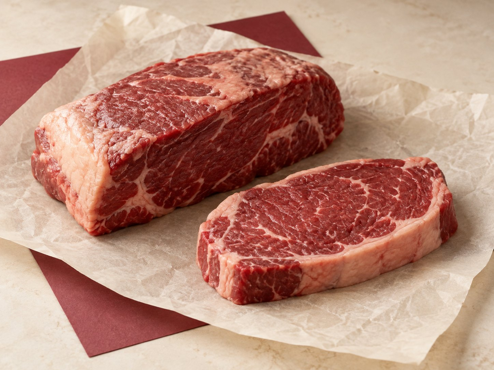

ოჯახური
ხორცი და დაბრაწული კარტოფილი ოჯახური სუფრისთვის.
ხორცის მიტანა · თბილისი
ვახშამი ოჯახისთვის თუ სუფრა სტუმრებისთვის — შეარჩიეთ ღორის, საქონლის ხორცი ან სუბპროდუქტები. წონას, ფასსა და მიტანას WhatsApp-ში შევათანხმებთ.
ვაკე · საბურთალო · დიდი დიღომი

გვითხარით, რას ამზადებთ
შევათანხმებთ დადასტურებამდე
ვაკე · საბურთალო · დიდი დიღომი
კატალოგი
ღორის, საქონლის ხორცი და სუბპროდუქტები. სასურველი ნაწილი და რაოდენობა თქვენზეა.
იდეები თქვენი სამზარეულოსთვის
15 იდეა თქვენი სამზარეულოსთვის. MeatCO-სგან შეუკვეთეთ უმი ხორცი და მოამზადეთ თქვენი რეცეპტით.
ხორცი და დაბრაწული კარტოფილი ოჯახური სუფრისთვის.
საქონლის ხორცი პომიდორთან, ხახვთან და მწვანილთან ერთად.
ნელი ხარშვით მომზადებული ხორცის ცივი კერძი.
სუბპროდუქტები სანელებლებით, ნიგვზითა და ბროწეულით.
წვნიანი ხორცის შიგთავსი თქვენი ხინკლისთვის.
ხორცის ნაჭრები ნაკვერჩხალზე შესაწვავად.
ზოგჯერ ხორცის ნაწილის ნაცვლად მხოლოდ თქვენი გეგმის ცოდნაც საკმარისია.
იმავე შეკვეთაში
მონიშნეთ სასურველი პროდუქტები. ასორტიმენტსა და ფასებს ხორცის შეკვეთასთან ერთად დავაზუსტებთ.
თბილისი · მიტანა სახლში
ჩვენი კურიერები შეკვეთებს ვაკეში, საბურთალოსა და დიდ დიღომში აწვდიან. ახლომდებარე მისამართებზე მიტანა წინასწარ შეათანხმეთ.
ახლომდებარე უბანში ხართ? მოგვწერეთ მისამართი — მიტანის შესაძლებლობას გადავამოწმებთ.
მისამართის გადამოწმებახორცის სახეობა, სავარაუდო წონა და მიტანის უბანი. თუ ვერ არჩევთ, დაგეხმარებით.
შევათანხმებთ ხელმისაწვდომ ნაჭერს, საბოლოო წონას, სრულ ღირებულებასა და მიტანის დროს.
დადასტურების შემდეგ შეკვეთას შეთანხმებულ მისამართზე კურიერი მოგიტანთ.
რესტორნებისა და კაფეებისთვის
ღორის, საქონლის ხორცი და სუბპროდუქტები თქვენი სამზარეულოსთვის. განვიხილოთ სასურველი ნაწილები, მოცულობა, ფასები და მოწოდების გრაფიკი.
თქვენი მენიუსა და მოთხოვნების მიხედვით
ერთჯერადი ან პერიოდული საჭიროება
ფასი, გრაფიკი და პირველი მოწოდება
კატალოგში ნაჩვენებია ფასი კილოგრამზე ან ცალზე. თუ ფასი მითითებული არ არის, WhatsApp-ში დავაზუსტებთ. საბოლოო თანხას, მიტანის ჩათვლით, შეკვეთის დადასტურებამდე შევათანხმებთ.
მიტანის ღირებულებასა და დროს თქვენი მისამართის მიხედვით WhatsApp-ში დავაზუსტებთ, შეკვეთის დადასტურებამდე.
გვაქვს ღვიძლი, გული, ენა, თირკმელები, ფაშვი და ფეხები. სახეობას, დამუშავების მდგომარეობას, წონასა და ფასს შეკვეთისას დავაზუსტებთ.
მოგვწერეთ სასურველი ზომა ან რისთვის გჭირდებათ ხორცი. დაჭრისა და დაფქვის შესაძლებლობას შეკვეთის დადასტურებამდე შეგატყობინებთ.
მოგვწერეთ კერძის სახელი ან მომზადების გზა და რამდენი ადამიანისთვის ამზადებთ. შესაფერისი ხორცის შერჩევაში დაგეხმარებით.
დიახ, შეგიძლიათ მოითხოვოთ ბოსტნეული, ხილი და კვერცხი. ხელმისაწვდომობას, რაოდენობასა და ფასს თქვენთან შევათანხმებთ.